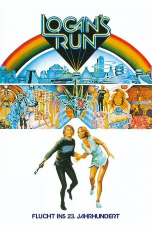

#2296 Flucht ins 23. Jahrhundert
Alternativ: Logan's Run
Auszeichnungen: 1 Oscars gewonnen für 2 Oscars nominiert
 
 IMDB-Wertung: 6.8 / 10
IMDB-Wertung: 6.8 / 10  Metascore: 53
Metascore: 53 
Im Jahr 2274 müssen sich die Menschen von der verwüsteten Umwelt abkapseln und unter der Glasglocke einer gewaltigen Metropole leben. Dort sorgen Computer und Roboter für alle nötigen Serviceleistungen - die Menschen können sich ganz ihren Neigungen hingeben. Allerdings nur bis zum "Letzten Tag". Und der kommt mit dem 30. Geburtstag, an dem alle Bewohner auf dem sogenannten Karussell ihren Trip in die Ewigkeit antreten müssen - angeblich, um wiedergeboren zu werden. Erstmals kam im Kino eine per Laser generierte Holographie zum Einsatz, die prompt mit einem Oscar für besondere Leistungen im Bereich der visuellen Effekte honoriert wurde. Michael York spielt den Sandmann Logan 5, der im Auftrag der Behörden Flüchtlinge ausschaltet, die dem Karussell entkommen wollen. Doch Loganj ist selbst fast 30. Und er sorgt dafür, dass ihn niemand erwischt.
Jahr: 1976
Dauer: 119 Minuten
FSK: 12
Land: USA Studio: United ArtistsTonspuren:
Untertitel:
Auflösung: 1080p (1920x800) Größe: 8130 MB
Genre: Action, Abenteuer, Sci-Fi
Regisseur: Michael Anderson
Drehbuch: David Zelag Goodman, William F. Nolan, George Clayton Johnson
Soundtrack: Jerry Goldsmith
Darsteller:
 Michael York als Logan
Michael York als Logan Richard Jordan als Francis
Richard Jordan als Francis Jenny Agutter als Jessica
Jenny Agutter als Jessica Roscoe Lee Browne als Box
Roscoe Lee Browne als Box- Farrah Fawcett als Holly
- Michael Anderson Jr. als Doc
 Peter Ustinov als Old Man
Peter Ustinov als Old Man- Gary Morgan als Billy
- Michelle Stacy als Mary 2
- David Westberg als Sandman
 Greg Lewis als Cub
Greg Lewis als Cub- Joe L. Blevins als Last Day Character , uncredited
- Dick DeCoit als (uncredited
- Mitchell Gaylord als Cub , uncredited
- William E. Johnson III als Extra , uncredited
- Richard Kelton als Sanctuary Man , uncredited
- Candice Rialson als 1st Screamer in Logan's Apartment , uncredited
- Randolph Roberts als 2nd Sanctuary Man
- Lara Lindsay als The Woman Runner
- Laura Hippe als Woman Customer
- Camilla Carr als Sanctuary Woman
- Ashley Cox als Timid Girl
- Bill Couch als Sandman
 Glenn R. Wilder als Runner
Glenn R. Wilder als Runner- Roger Borden als Sandman Daniel , uncredited
- Paula Crist als City Dweller , uncredited
- Chuck Gaylord als Cub , uncredited
- Johnny Haymer als (uncredited
- Jessie Kirby als Confused City Dweller , uncredited
- Greg Michaels als 3rd Sanctuary Man / Ambush Man , uncredited
 Bob Neill als 1st Sanctuary Man , uncredited
Bob Neill als 1st Sanctuary Man , uncredited- Ron D. Thornton als Runner Great Hall , uncredited
- Johnny Timko als (uncredited
Datei: X:\1976\Flucht ins 23. Jahrhundert (1976, FSK12, 1920x800).mkv seit 26.10.2015
Festplatte: HD 1971-1979
 Es gibt insgesamt 31 Filme in der Gruppe '1976'
Es gibt insgesamt 31 Filme in der Gruppe '1976'